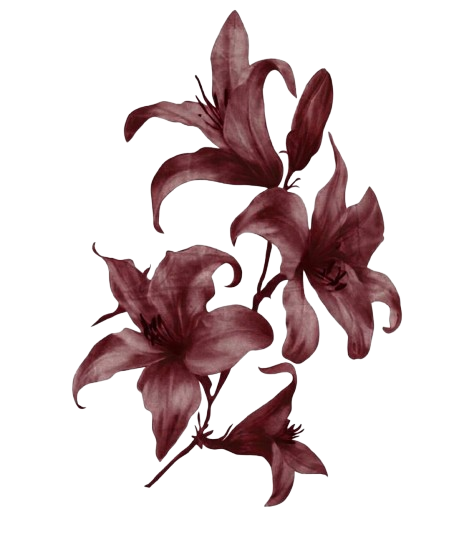

Étudiante en communication, spécialité graphique, et chargée de communication en
alternance chez Cofféa depuis deux ans. J'y pilote les réseaux sociaux de l'enseigne en
autonomie, de la stratégie éditoriale au montage, et je crée aussi bien des visuels que
des textes. Je cherche une alternance pour la rentrée 2026.
Expérience en communication
Chargée de communication · Cofféa
Alternance · depuis février 2026
Le Havre (76) · enseigne de café, thé et gourmandises · autonomie complète
- Gestion complète d'Instagram, Facebook et TikTok, de la conception à la publication
- Réalisation de réels : écriture, tournage en boutique, montage et sous-titrage
- Calendrier éditorial hebdomadaire et lignes éditoriales par intention
- Photos produits, rédaction web référencée et création de supports print
- Déploiement de LinkedIn avec les équipes marketing et ressources humaines
Assistante communication · Cofféa
Alternance · sept. 2024 – févr. 2026
Le Havre (76) · en appui de la responsable marketing
- Création de contenus Instagram sous la supervision de la responsable marketing
- Réalisation de supports de communication print
- Participation à la stratégie éditoriale
- Veille concurrentielle et analyse des tendances
Community manager bénévole · Havre de Vers
déc. 2025 – févr. 2026
Le Havre (76) · association de permaculture urbaine
- Création des visuels Instagram de l'association, de la proposition à la validation
Compétences et outils
Création graphique
Illustrator
Canva
Figma
Identité visuelle
Iconographie
Vidéo et motion
After Effects
CapCut
Tournage
Montage
Digital et rédaction
Stratégie éditoriale
Rédaction web
Référencement
WordPress
Tilda
Trello
Qualités
Créativité
Rigueur
Curiosité
Esprit d'équipe
Adaptabilité
Vente, conseil et service
Conseillère de vente · Cofféa, Le Havre (76)
CDI · janv. – sept. 2024
Serveuse · Le Grand Quai, Le Havre (76)
intérim · févr. – avr. 2024
Serveuse · Casino Pasino, Le Havre (76)
CDD · nov. 2023
Runner · L'Idylle Café Plage, Biscarrosse (40)
saisonnier · 2021 et 2022
Vendeuse · Les Fournils de Gaïa, Paris (75)
CDD · oct. 2021 – janv. 2022
Employée polyvalente · Intermarché, Chelles (77)
CDD · mars 2020 – avr. 2021
Animation et événementiel
Missions ponctuelles en intérim · animation mascotte, animations commerciales, accueil et sensibilisation, distribution
depuis 2022
Smyths Toys, Butagaz, Orange, SFR, Nordic Spirit, Cidre Val de Rance, Deliveroo, Nocibé, Audika